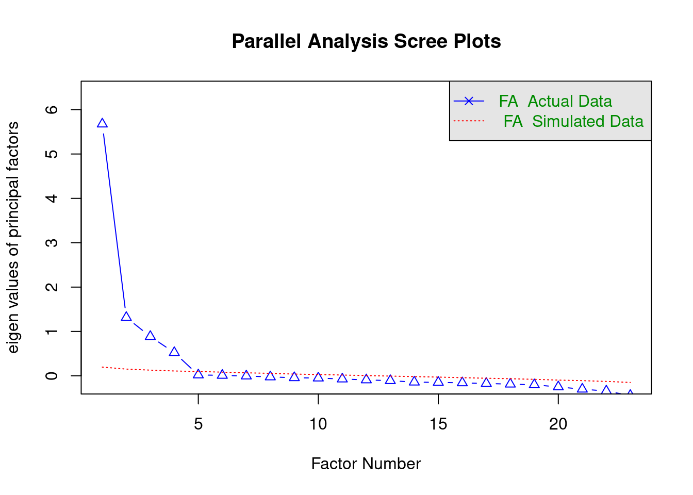
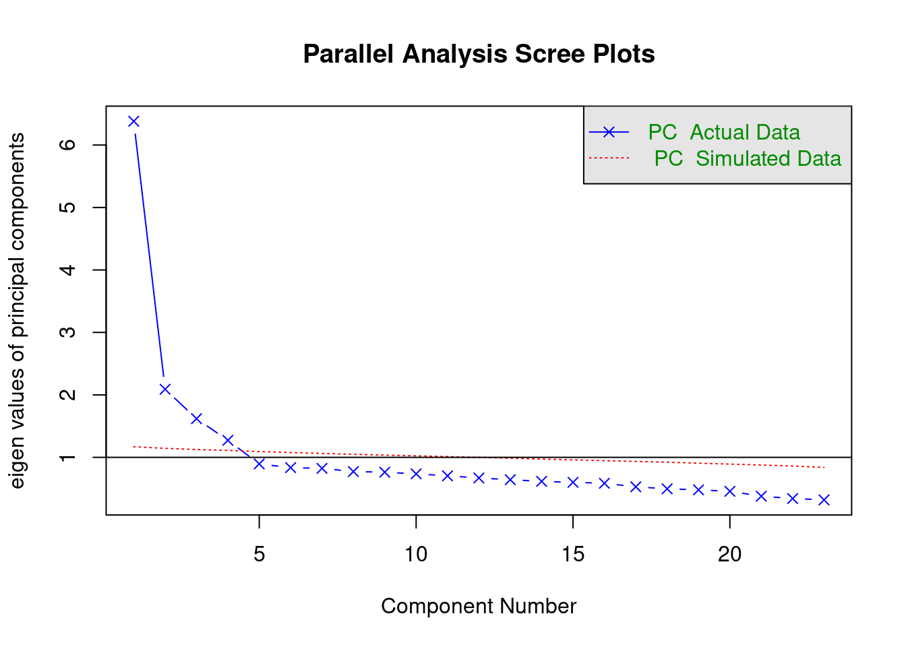
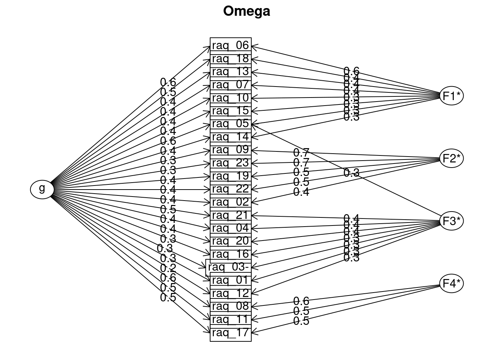

Rows: 2571 Columns: 24
── Column specification ────────────────────────────────────────────────────────
Delimiter: ","
chr (1): id
dbl (23): raq_01, raq_02, raq_03, raq_04, raq_05, raq_06, raq_07, raq_08, ra...
ℹ Use `spec()` to retrieve the full column specification for this data.
ℹ Specify the column types or set `show_col_types = FALSE` to quiet this message.
#creating object with only raq items (without id number)raq_items_tib <- raq_tib |> dplyr::select(-id)raq_items_tib
fa = “both” is default - shows both factors and components. can change to fa = “fa” to just show number of factors to extract
cor = “cor” is default - uses pearson’s correlations. can change to cor = “poly” for polychoric correlations
#using the raw data#psych::fa.parallel(raq_items_tib, fa = "fa", cor = "poly")#using the correlation matrix we made earlier (faster)psych::fa.parallel(raq_cor, n.obs =2571, fa ="fa")

Parallel analysis suggests that the number of factors = 4 and the number of components = NA
Using eigenvalues
Compares our data to a data set with no underlying factors (keep the factors with eigenvalues bigger than red line)
# parallel analysis but with principle components to compute the eigenvalues # Using the raw data#psych::fa.parallel(raq_items_tib, fa = "pc", cor = "poly")# Using the correlation matrix (faster)psych::fa.parallel(raq_cor, n.obs =2571, fa ="pc")

Parallel analysis suggests that the number of factors = NA and the number of components = 4
Creating the factor analysis object (and inspecting it)
General format
my_fa_object <- psych::fa(data_tib, nfactors =1, fm ="minres", rotate ="oblimin", scores ="regression", max.iter =50, use ="pairwise", cor ="cor")
nfactors = how many factors to extract
rotate = “oblimin”: the method of factor rotation. the default is an oblique rotation method called oblimin
scores = “regression” is default method for computing factor scores - use scores = “tenBerge” for oblique rotation
library(GPArotation)# using the raw rata # raq_fa <- psych::fa(raq_items_tib,# nfactors = 4,# scores = "tenBerge",# cor = "poly"# )# using the correlation matrix raq_fa <- psych::fa(raq_cor, n.obs =2571, nfactors =4,scores ="tenBerge" )raq_fa
Factor Analysis using method = minres
Call: psych::fa(r = raq_cor, nfactors = 4, n.obs = 2571, scores = "tenBerge")
Standardized loadings (pattern matrix) based upon correlation matrix
MR1 MR2 MR4 MR3 h2 u2 com
raq_01 -0.03 0.01 0.39 0.06 0.17 0.83 1.1
raq_02 0.25 0.48 0.02 -0.03 0.38 0.62 1.5
raq_03 0.00 0.01 -0.43 -0.03 0.20 0.80 1.0
raq_04 0.03 -0.02 0.56 0.00 0.33 0.67 1.0
raq_05 0.45 -0.01 0.39 0.02 0.54 0.46 2.0
raq_06 0.84 0.00 -0.01 0.03 0.73 0.27 1.0
raq_07 0.56 0.04 0.00 0.04 0.35 0.65 1.0
raq_08 0.00 -0.01 -0.01 0.88 0.75 0.25 1.0
raq_09 -0.07 0.81 0.00 0.03 0.62 0.38 1.0
raq_10 0.49 -0.05 0.09 -0.02 0.26 0.74 1.1
raq_11 -0.01 0.01 0.03 0.72 0.55 0.45 1.0
raq_12 -0.01 0.01 0.37 -0.07 0.11 0.89 1.1
raq_13 0.57 0.03 0.04 -0.03 0.34 0.66 1.0
raq_14 0.42 0.04 0.01 0.06 0.22 0.78 1.1
raq_15 0.48 0.03 0.03 0.05 0.29 0.71 1.0
raq_16 -0.05 0.02 0.51 -0.01 0.23 0.77 1.0
raq_17 0.03 0.02 0.00 0.68 0.49 0.51 1.0
raq_18 0.63 0.01 -0.02 0.07 0.43 0.57 1.0
raq_19 0.26 0.56 0.00 -0.01 0.50 0.50 1.4
raq_20 0.00 0.01 0.54 0.05 0.32 0.68 1.0
raq_21 -0.02 0.05 0.59 0.06 0.40 0.60 1.0
raq_22 0.19 0.52 0.03 0.05 0.41 0.59 1.3
raq_23 -0.08 0.79 0.02 -0.01 0.59 0.41 1.0
MR1 MR2 MR4 MR3
SS loadings 3.04 2.24 2.03 1.91
Proportion Var 0.13 0.10 0.09 0.08
Cumulative Var 0.13 0.23 0.32 0.40
Proportion Explained 0.33 0.24 0.22 0.21
Cumulative Proportion 0.33 0.57 0.79 1.00
With factor correlations of
MR1 MR2 MR4 MR3
MR1 1.00 0.38 0.50 0.48
MR2 0.38 1.00 0.28 0.28
MR4 0.50 0.28 1.00 0.57
MR3 0.48 0.28 0.57 1.00
Mean item complexity = 1.1
Test of the hypothesis that 4 factors are sufficient.
df null model = 253 with the objective function = 6.79 with Chi Square = 17387.52
df of the model are 167 and the objective function was 0.1
The root mean square of the residuals (RMSR) is 0.01
The df corrected root mean square of the residuals is 0.02
The harmonic n.obs is 2571 with the empirical chi square 205.03 with prob < 0.024
The total n.obs was 2571 with Likelihood Chi Square = 267.21 with prob < 1.3e-06
Tucker Lewis Index of factoring reliability = 0.991
RMSEA index = 0.015 and the 90 % confidence intervals are 0.012 0.019
BIC = -1044.08
Fit based upon off diagonal values = 1
Measures of factor score adequacy
MR1 MR2 MR4 MR3
Correlation of (regression) scores with factors 0.93 0.91 0.88 0.92
Multiple R square of scores with factors 0.87 0.83 0.77 0.85
Minimum correlation of possible factor scores 0.73 0.66 0.54 0.70
Factor loadings
threshold = “max” is default - shows only primary factor loadings, or can change to be threshold = “0.2” (for example), or can change to see all factor loadings threshold = NULL
#to make it look nicer: options(knitr.kable.NA ="")parameters::model_parameters(raq_fa,sort =TRUE, threshold ="max") |> knitr::kable(digits =2)
because we use polychoric correlations we need to include poly = TRUE
key argument allows us to reverse item scoring - to be quicker, use rep(), which takes the form rep(thing_to_repeat, repetitions)
# need to have loaded library(GPArotation)raq_omg <- psych::omega(raq_items_tib,nfactors =4,fm ="minres",key =c(1, 1, -1, rep(1, 20)),poly =TRUE )

raq_omg
Omega
Call: omegah(m = m, nfactors = nfactors, fm = fm, key = key, flip = flip,
digits = digits, title = title, sl = sl, labels = labels,
plot = plot, n.obs = n.obs, rotate = rotate, Phi = Phi, option = option,
covar = covar)
Alpha: 0.88
G.6: 0.89
Omega Hierarchical: 0.68
Omega H asymptotic: 0.75
Omega Total 0.9
Schmid Leiman Factor loadings greater than 0.2
g F1* F2* F3* F4* h2 h2 u2 p2 com
raq_01 0.32 0.26 0.17 0.83 0.57 1.99
raq_02 0.37 0.43 0.38 0.38 0.62 0.37 2.34
raq_03- 0.34 0.29 0.20 0.20 0.80 0.56 1.97
raq_04 0.43 0.38 0.33 0.33 0.67 0.56 1.98
raq_05 0.62 0.32 0.27 0.54 0.54 0.46 0.70 1.90
raq_06 0.61 0.60 0.73 0.73 0.27 0.51 2.00
raq_07 0.44 0.39 0.35 0.35 0.65 0.54 2.00
raq_08 0.62 0.61 0.75 0.75 0.25 0.51 2.00
raq_09 0.32 0.73 0.62 0.62 0.38 0.17 1.39
raq_10 0.37 0.35 0.26 0.26 0.74 0.53 2.07
raq_11 0.54 0.50 0.55 0.55 0.45 0.54 1.99
raq_12 0.22 0.25 0.11 0.89 0.44 2.05
raq_13 0.42 0.40 0.34 0.34 0.66 0.51 2.02
raq_14 0.36 0.30 0.22 0.22 0.78 0.59 1.98
raq_15 0.41 0.34 0.29 0.29 0.71 0.59 1.97
raq_16 0.34 0.34 0.23 0.23 0.77 0.49 2.02
raq_17 0.52 0.47 0.49 0.49 0.51 0.55 1.99
raq_18 0.48 0.44 0.43 0.43 0.57 0.54 2.02
raq_19 0.43 0.51 0.50 0.50 0.50 0.37 2.23
raq_20 0.43 0.36 0.32 0.32 0.68 0.58 1.95
raq_21 0.49 0.40 0.40 0.40 0.60 0.59 1.97
raq_22 0.41 0.46 0.41 0.41 0.59 0.41 2.16
raq_23 0.30 0.71 0.59 0.59 0.41 0.15 1.35
With Sums of squares of:
g F1* F2* F3* F4* h2
4.40 1.39 1.71 0.85 0.86 4.37
general/max 1.01 max/min = 5.15
mean percent general = 0.49 with sd = 0.13 and cv of 0.26
Explained Common Variance of the general factor = 0.48
The degrees of freedom are 167 and the fit is 0.1
The number of observations was 2571 with Chi Square = 267.21 with prob < 1.3e-06
The root mean square of the residuals is 0.01
The df corrected root mean square of the residuals is 0.02
RMSEA index = 0.015 and the 10 % confidence intervals are 0.012 0.019
BIC = -1044.08
Compare this with the adequacy of just a general factor and no group factors
The degrees of freedom for just the general factor are 230 and the fit is 2.39
The number of observations was 2571 with Chi Square = 6122.42 with prob < 0
The root mean square of the residuals is 0.1
The df corrected root mean square of the residuals is 0.11
RMSEA index = 0.1 and the 10 % confidence intervals are 0.098 0.102
BIC = 4316.45
Measures of factor score adequacy
g F1* F2* F3* F4*
Correlation of scores with factors 0.84 0.76 0.87 0.67 0.74
Multiple R square of scores with factors 0.71 0.57 0.75 0.44 0.55
Minimum correlation of factor score estimates 0.42 0.14 0.51 -0.11 0.10
Total, General and Subset omega for each subset
g F1* F2* F3* F4*
Omega total for total scores and subscales 0.90 0.83 0.80 0.69 0.81
Omega general for total scores and subscales 0.68 0.48 0.23 0.38 0.43
Omega group for total scores and subscales 0.18 0.35 0.56 0.31 0.38
The column g shows the loading of each item on the general factor
Columns F1 to F4 show factor loadings for each item (don’t match main factor analysis because this model includes general factor)
Cronbach’s alpha
Not recommended
Pipe the variables for each subscale into the alpha() function from psych
# eg for fear of computers subsclale raq_tib |> dplyr::select(raq_05, raq_06, raq_07, raq_10, raq_13, raq_14, raq_15, raq_18) |> psych::alpha()